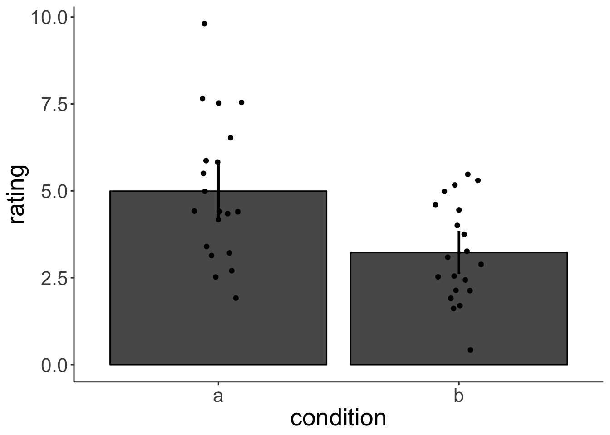
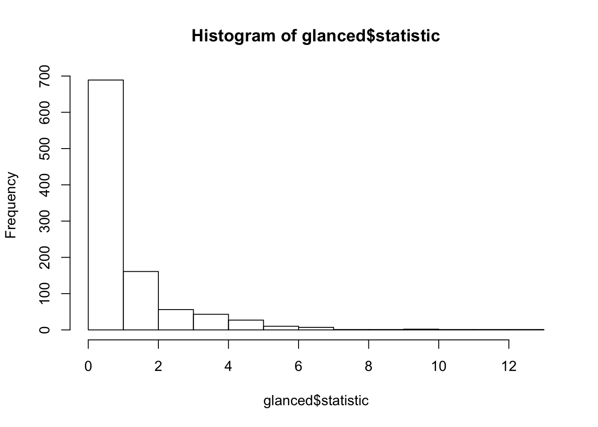

Chapter 4 Simulating Data
- use ideas from data camp course
- illustrate ideas related to correlation: https://crumplab.github.io/statistics/Correlation.html#if-something-caused-something-else-to-change-what-would-that-look-like
- how gifs were produced: https://crumplab.github.io/statistics/gifs.html#correlation-gifs
4.1 Sampling
- sampling functions in R
- sample()
- sampling from distributions
- sampling from data frames
sample_n()sample_frac()
4.2 Permutation test
set.seed(0)
df.data = data_frame(
a = rnorm(20, mean = 5, sd = 2),
b = rnorm(20, mean = 3, sd = 2)
) %>%
gather('condition','rating')
df.data %>%
group_by(condition) %>%
summarize(rating.mean = mean(rating),
rating.sd = sd(rating)) %>%
kable()| condition | rating.mean | rating.sd |
|---|---|---|
| a | 4.996443 | 2.042983 |
| b | 3.223299 | 1.434074 |
ggplot(data = df.data, aes(x = condition, y = rating))+
stat_summary(fun.y = mean, geom = 'bar', color = 'black')+
stat_summary(fun.data = mean_cl_boot, geom = 'linerange', size = 1)+
geom_point(position = position_jitter(height = 0, width = 0.1))
The difference in the mean rating between condition a and b is 1.7731439.
Is the difference significant / meaningful? What were the chances of this difference arising due to chance?
set.seed(0)
df.permutation = df.data %>%
mutate(permutation = sample(condition)) #randomly assign labels
df.permutation %>%
group_by(permutation) %>%
summarize(rating.mean = mean(rating),
rating.sd = sd(rating)) %>%
kable()| permutation | rating.mean | rating.sd |
|---|---|---|
| a | 4.009136 | 2.107449 |
| b | 4.210605 | 1.849973 |
ggplot(data = df.permutation, aes(x = permutation, y = rating))+
stat_summary(fun.y = mean, geom = 'bar', color = 'black')+
stat_summary(fun.data = mean_cl_boot, geom = 'linerange', size = 1)+
geom_point(aes(color = condition), position = position_jitter(height = 0, width = 0.1))
Now, let’s do this many times.
# df.permutations = permute(data = df.data, n = 10)
#
#
# df.permutations %>%
# map_df(.$perm, ~ group_by(condition) %>% summarize(mean(rating)))
#
#
# tmp = df.permutations$perm[1][[1]]
#
# df.permutations$perm[1][[1]]$data %>%
# group_by(condition) %>%
# summarize(mean(rating))perms <- permute(mtcars, 1000, mpg)
models <- map(perms$perm, ~ lm(mpg ~ wt, data = .))
glanced <- map_df(models, broom::glance, .id = "id")
# distribution of null permutation statistics
hist(glanced$statistic)